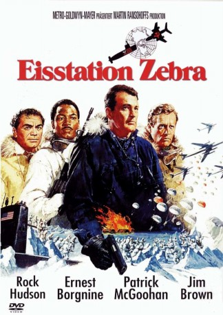
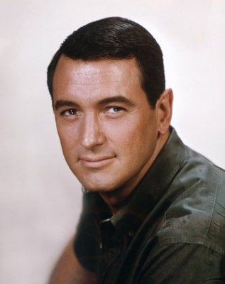
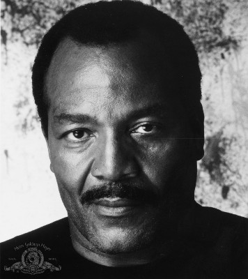
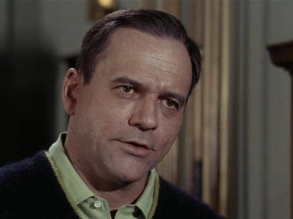
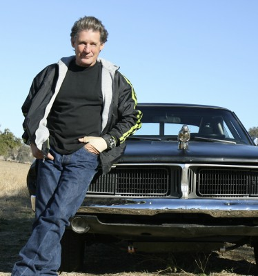
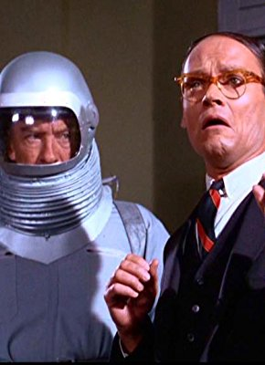
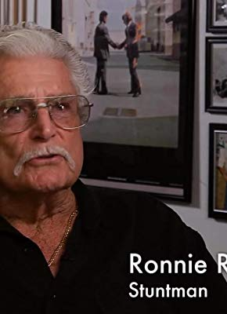

#5532 Eisstation Zebra
Alternativ: Ice Station Zebra
Auszeichnungen: für 2 Oscars nominiert
 
 IMDB-Wertung: 6.6 / 10
IMDB-Wertung: 6.6 / 10  Metascore: 0
Metascore: 0 
Das amerikanische Atom-U-Boot Tigerfish arbeitet sich Richtung Nordpol vor. Sein Auftrag: Die Rettung der in Lebensgefahr schwebenden Mannschaft auf dem meteorologischen Aussenposten Eisstation Zebra. Neben Commander Ferraday und seiner Crew befinden sich etliche unerwartete Passagiere mit Geheimauftraegen an Bord…
Jahr: 1968
Dauer: 149 Minuten
FSK: 12
Land: USA Studio: Metro Goldwyn Mayer ReleaseTonspuren: DTS - ,
Untertitel: Deutsch, Englisch,
Auflösung: 1080p (1920x872) Größe: 11161 MB
Genre: Thriller, Drama, Abenteuer
Regisseur: John Sturges
Drehbuch: Sönke Wortmann
Soundtrack:
Darsteller:
-  Rock Hudson als Cdr. James Ferraday
 Ernest Borgnine als Boris Vaslov
Ernest Borgnine als Boris Vaslov Patrick McGoohan als David Jones
Patrick McGoohan als David Jones-  Jim Brown als Capt. Leslie Anders
- Tony Bill als Lt. Russell Walker
- Lloyd Nolan als Admiral Garvey
-  Gerald S. O'Loughlin als Lt. Cdr. Bob Raeburn
- Ron Masak als Paul Zabrinczski
- Sherwood Price als Lt. Edgar Hackett
- Lee Stanley als Lt. Mitgang
- John Orchard als Survivor
- Michael T. Mikler als Lt. Courtney Cartwright
- Jonathan Goldsmith als Russian Aide
- Jed Allan als Peter Costigan
- Lloyd Haynes als Webson
- Buddy Garion als Edward Rawlins
-  Buddy Joe Hooker als Hill
- Alf Kjellin als Col. Ostrovsky
- Ted Hartley als Lt. Jonathan Hansen
- Murray Rose als Lt. George Mills
- Joseph Bernard als Dr. Jack Benning
-  William O'Connell als Survivor
- Ted Kristian als Wassmeyer
- Jim Dixon als Earl MacAuliffe
- Boyd Berlind als Bruce Kentner
- David Wendel als Cedric Patterson
-  Ronnie Rondell Jr. als Lyle Nichols
- Craig Shreeve als Gafferty
- Michael Grossman als Kohler
- Wade Graham als Parker
- Michael Rougas als Fannovich
- T.J. Escott als Lt. Carl Mingus
- Gary Downey als Lorrison
- Robert Carlson als Kelvaney
- Don Newsome als Timothy Hirsch
- Jim Goodwin als Survivor
- William Byron Hillman als Philip Munsey
- Dennis Alpert als Gambetta
- John Breen als Bar Patron , uncredited
- Donald Chaffin als Bar Patron , uncredited
- Louie Elias als Maneuver Sergeant , uncredited
- Ty Haller als Pvt. Grey , uncredited
- James Jeter als 2nd Barman , uncredited
- Larry Strong als Wardroom Attendent , uncredited
Datei: X:\1968\Eisstation Zebra (1968, FSK12, 1920x872).mkv seit 14.02.2017
Festplatte: HD 1900-1970
 Es gibt insgesamt 25 Filme in der Gruppe '1968'
Es gibt insgesamt 25 Filme in der Gruppe '1968'